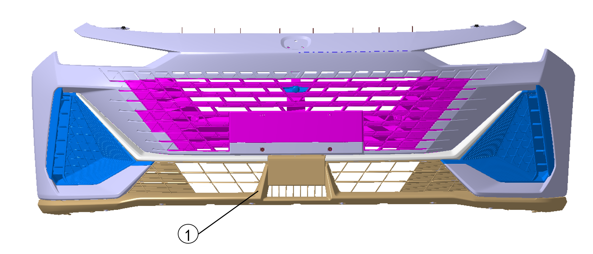
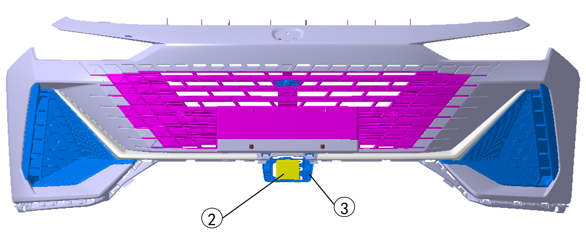
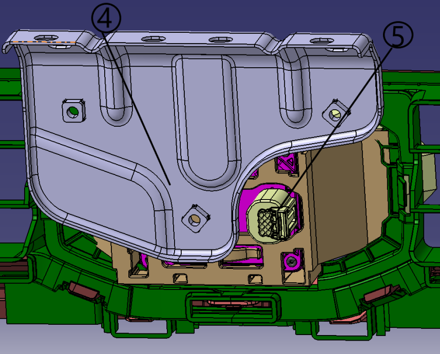
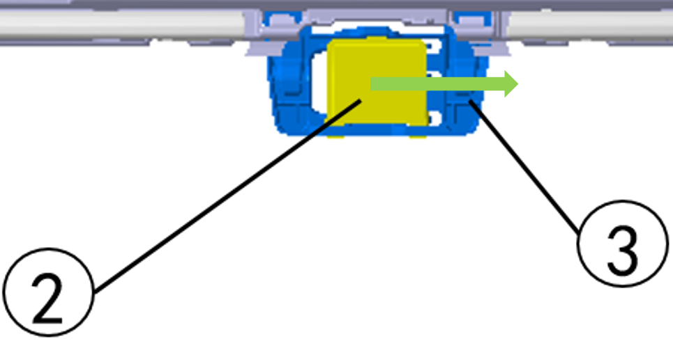

Радар миллиметрового диапазона переднего обзора в сборе



1. Снять передний бампер ①. См. Снятие и установка переднего бампера;
2. Отжать фиксаторы в направлении стрелки, показанной на рисунке, и снять радар миллиметрового диапазона переднего обзора ②;

3. Отсоединить разъем жгута проводов контроллера адаптивного круиз-контроля ⑤, снять радар миллиметрового диапазона переднего обзора в сборе;

Сначала установить радар миллиметрового диапазона переднего обзора с левой стороны, затем задвинуть правую часть кронштейна до фиксации в пластиковом кронштейне контроллера адаптивного круиз-контроля до отчетливого щелчка.
УстановкаУстановка выполняется в порядке, обратном снятию.